OneRetrieval: Unifying Multi-Branch E-commerce Retrieval with an Editable Generative Model / 用可编辑生成式模型统一多分支电商召回
论文入口：arXiv:2606.13533。公开时间以 arXiv 页面为准：2026-06-11。论文首页和元数据列出的作者包括 Xuxin Zhang、Ben Chen、Yue Lv、Siyuan Wang、Yupeng Li、Yufei Ma、Zihan Liang、Tong Zhao、Ying Yang、Huangyu Dai、Lingtao Mao、Zhipeng Qian、Xinyu Sun、Chenyi Lei、Wenwu Ou、Kun Gai；首页机构信息显示为 Kuaishou Technology, Beijing。代码/项目页状态：论文首页给出的 GitHub 仓库 https://github.com/xuxinzhang/oneretrieval 本轮访问返回 200，视为已核验到独立仓库入口。
这篇论文讨论的是工业电商搜索里的召回层：线上系统通常同时保留倒排索引、向量召回、协同过滤和若干专用召回分支，再把候选集合并给后续预排和排序。OneRetrieval 的目标不是再加一个召回分支，而是尝试用一个生成式检索模型统一多分支召回，同时保留倒排索引最难被替代的实时可编辑能力。论文给出的关键词是 Keyword-Aligned Encoding，简称 KAE：identifier 的每个位置不再绑定不可解释的量化 embedding，而是和生产属性词典里的 key attribute word 对齐，并为上线后新词保留可绑定的 reserved slot。
1. 背景和问题
工业电商搜索的召回层本质上是在极短延迟内从千万到亿级商品库里筛出可排序候选。传统工程做法不是押注单一算法，而是用多分支结构分摊风险：倒排索引用词项匹配兜住字面查询和运营词；dense retriever 用向量相似度弥补同义词、长尾语义和表述差异；协同召回利用用户共现行为处理头部 query 和活跃用户；一些平台还会保留类目召回、活动召回、个性化召回等垂类分支。这个结构的优点是稳健，缺点也明显：每个分支独立训练或配置，候选合并依赖人工调参，跨分支重复很高，召回目标和排序目标之间没有统一优化，而且每条分支都有自己的解释、更新和容量成本。
论文最有价值的切入点，是它没有把“生成式检索能否提升 HR”当成唯一问题。作者先指出一个生产悖论：倒排索引分支在内部测量中转化率低于平台平均，但系统仍然很难移除它。原因不是它效果最好，而是它几乎是唯一能让运营在数小时内注入新词、新品牌、新活动词或突发 IP 的分支。比如某个新品、联名名词、流行玩具或营销口号突然爆发，运营可以把词写进同义词表、标签字典或词典资源，再通过增量索引刷新把这个词绑定到目标商品集合，不需要重新训练模型。这种 same-day editability 对电商非常关键，因为商品、活动和热点词的变化速度远快于大模型或召回模型的训练周期。
已有生成式检索方法虽然提供了统一召回的想象空间，但大多没有恢复这项能力。闭码本方法把 item identifier 做成一串固定整数码，典型方式是残差量化、产品量化或层次量化。它们适合自回归生成，因为输出空间紧凑，但每个 slot 的语义来自训练期的 embedding 聚类，slot 和真实词之间没有透明绑定。上线后出现一个新词时，系统无法告诉模型“把这个词映射到第几位第几个 code”，除非重训量化器和生成策略。开放词表方法用标题片段、n-gram 或自然语言 span 作为 identifier，语义透明度更好，但它把新词路由交给语言模型泛化：模型可能生成该词，也可能不生成；即使生成了，也没有一个显式机制把它绑定到运营指定的商品集合。这两类方案在检索质量上可以超过传统召回，却没有给出倒排索引那种可控编辑入口。
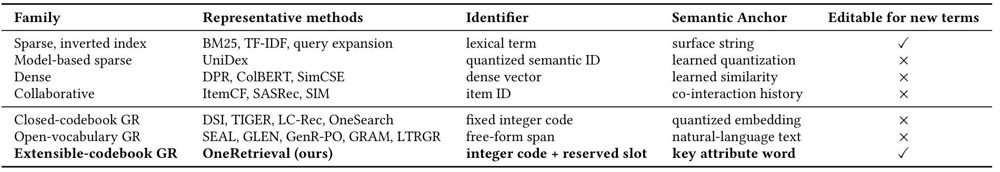
表 1 把这个背景压缩成一张很清楚的对照表。Sparse inverted index 的 identifier 是 lexical term，semantic anchor 是 surface string，因此当新词进入词典或同义词资源后，它天然可以被服务；dense、collaborative 和 model-based sparse 方案虽然有学习到的表示，却无法在不训练的情况下注册一个新词；闭码本 GR 的 fixed integer code 绑定到 quantized embedding，开放词表 GR 虽然输出 free-form span，但没有面向指定 item set 的绑定机制。OneRetrieval 被放在 extensible-codebook GR 一行，identifier 是 integer code + reserved slot，semantic anchor 是 key attribute word，并在最后一列恢复可编辑性。这张表不是简单的相关工作罗列，而是在定义论文的评价轴：如果只比较 HR 或 MRR，生成式召回可能已经足够强；如果目标是替代工业召回层，模型必须同时回答“召得准”和“能被运营当天改”两个问题。
因此，OneRetrieval 要解决的不是“如何把 item 文本变成一个 SID”这么窄的问题，而是一个系统替代问题：能否把倒排、dense 和协同等多分支的召回能力迁移到一个生成策略里，同时把倒排索引的可编辑性迁移到生成式 identifier 体系里。论文把这个目标拆成三个约束。第一，identifier 必须足够紧凑，否则自回归生成每多一个位置都会增加延迟。第二，identifier 的每个位置要可解释，并且能利用语言模型已有的词义先验。第三，码本中要提前预留可被新词绑定的位置，使得上线后只改词典和 SID-to-item index，而不用改模型参数。KAE 正是在这三个约束之间取平衡：它不让 identifier 退回纯自然语言，也不让 identifier 变成不可解释聚类编号，而是把有限长度的整数码位置和生产属性词对齐。
从推荐系统角度看，这篇论文还有一个隐含判断：召回层统一不是为了让模型“更大”，而是为了减少多分支系统的结构性债务。多分支召回在短期内稳，但长期会让每个候选来源有不同数据闭环、不同调参入口和不同可解释口径。OneRetrieval 的野心在于，至少在 out-of-mall search 这个场景里，让一个生成模型承担大部分召回，并把可编辑能力外置到 attribute dictionary 与 lookup index。这个设计如果成立，后续排序系统拿到的候选来源会更统一，召回评价也更容易回到一个模型策略和一套 identifier 体系上，而不是在多个 branch 的 merge rule 中找原因。
2. 方法
2.1 问题形式化：把召回写成 SID 序列生成
论文首先把检索任务形式化为条件生成。设用户 query 空间为 Q，商品集合为 I。每个商品 i 带有标题、结构化属性、详情页文本和图片 OCR；用户 u 发出 query q 时，还可能带有最近搜索和最近交互商品形成的上下文 c_u。召回层要返回候选集合 R(q,c_u)，目标是让这些候选在相关性和下游转化上尽可能好。OneRetrieval 不直接给每个 item 打分，而是先给每个 item 分配一个结构化语义标识 SID，再让 encoder-decoder policy 生成最可能的 SID 序列。
符号解释：s_i 表示商品 i 的 semantic identifier；L 是 identifier 长度；s_i^{(\ell)} 表示第 \ell 个位置上的 token；第 \ell 个 token 来自位置专属码本 V_\ell。这里的关键不在于“用序列表示 item”本身，而在于每个位置都有固定语义分工。闭码本方法通常也输出序列，但位置语义来自 embedding 聚类；OneRetrieval 希望每个位置能对应一组 key attribute，例如 product core、brand/crowd、material/model、spatiotemporal、function/quality、style/pattern。这样，当模型在某一位置生成某个 code 时，系统能知道它大致指向什么属性维度。
符号解释：\pi_\theta 是 encoder-decoder 检索策略；TopK_s 表示在 SID 空间中取概率最高的 K 个序列；T 是预先构建的 SID-to-item lookup index，把生成出的 SID 解析成一个或多个商品。这个公式说明 OneRetrieval 的在线推理不是“生成商品文本”，也不是“在全量 item 上打分”，而是先生成有限长 SID，再用索引扩展到候选商品。T 可以是一对多，因为多个语义等价或近似的商品可以共享 SID，所以 K 个 SID 通常会解析出多于 K 个 item。这和倒排索引的精神相似：模型负责产生可解释的路由键，索引负责把键展开成候选集合。
策略的自回归分解和训练目标如下：
符号解释：s^{(<\ell)} 是第 \ell 位之前已经生成的 SID 前缀；每一位的条件概率依赖 query、用户上下文和前缀。这意味着 SID 的顺序会影响模型学习，尤其当第一位是 entity 或 product core 这类主语义锚点时，后续属性就会在这个前缀下生成。论文最终选择非层次编码，原因后面会讲，但自回归结构本身仍然让前面位置承担更强的路由作用。
符号解释：D 是训练三元组集合，每个三元组包含 query、上下文和真实交互 item 的 SID；\mathcal{L}(\theta) 是负对数似然；内层求和覆盖 SID 的每个位置。论文特别强调，后面的四阶段 SFT 都沿用这种逐 token 最大似然形式，只是输入和目标模板不同。这个统一目标让 Stage 0 的词到 slot 对齐、Stage 1 的内容到 SID 对齐、Stage 2 的 query-SID 到 item-SID 共现、Stage 3 的个性化检索都能落在同一个生成策略上，而不是为每个阶段设计不同损失。
这个形式化还有一个容易忽略的好处：它把“召回候选的数量控制”和“商品集合的变化”拆开了。模型只需要在 SID 空间里生成 K 个语义键，K 可以由延迟预算和下游预排容量控制；真正的 item 数量由 T 的一对多映射展开。若同一个 SID 下有多个等价或相近商品，lookup index 可以根据库存、上下架、运营绑定或其他服务规则更新，不必把每个 item 都暴露成模型独立输出 token。对电商来说，这比文档检索里的 docid generation 更贴近生产，因为同款、近似款、颜色尺码变体和活动商品集合经常变化，模型输出一个语义键，再由索引接管商品级变动，能够降低模型参数承担的目录更新压力。
同时，这个形式化把训练误差分成两类：一类是 policy 没有生成正确 SID，另一类是 T 对 SID 到 item 的解析不合适。传统多分支召回常把这两类问题混在一起，某个 branch 的候选不好可能是召回模型表示不准，也可能是词典、索引、合并或过滤规则不对。OneRetrieval 至少在结构上把 policy 与 lookup index 分开，让线下诊断可以分别看 SID 命中、SID 解析数量、item set 质量和下游排序表现。这个分层对可编辑性尤其重要，因为新词干预本来就是 lookup index 与 attribute dictionary 的变化，不能要求 policy 在当天理解新词本身。
2.2 框架总览：KAE、四阶段 SFT 和在线可编辑旁路
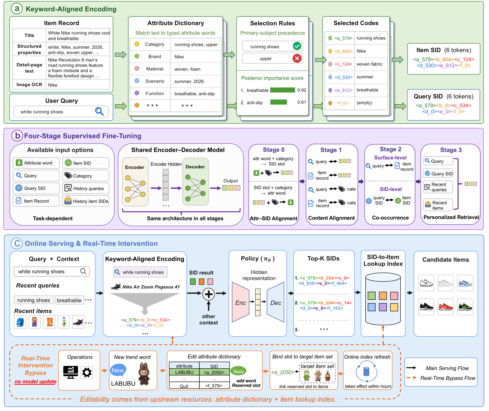
图 1 是理解全文的主图。上半部分 a 展示 Keyword-Aligned Encoding：商品记录和用户 query 都会先与 attribute dictionary 做匹配，字典条目带有类别信息，例如 Category、Brand、Material、Scenario、Function。若同一组里匹配到多个词，系统用 primary-subject precedence 和 posterior importance score 选择代表词，最后把六个位置拼成 item SID 或 query SID。这里的“shared attribute dictionary”很重要：item 和 query 使用同一套资源，所以 query 侧出现的属性词和 item 侧的属性词可以落到同一语义空间，而不是分别由两个 tower 学 embedding 后再靠相似度碰运气。
图 1 的 b 部分展示四阶段监督微调。Stage 0 做 Attribute-SID Alignment，学习属性词与具体 SID slot 的双向映射；Stage 1 做 Content Alignment，把 query、item record、category 等表面内容和 SID 对齐；Stage 2 做 Co-occurrence，把 query/item 在 surface-level 和 SID-level 的共现关系注入模型；Stage 3 做 Personalized Retrieval，把当前 query、query SID、最近 query、最近 item SID 组合起来，生成真实交互 item 的 SID。四阶段都使用同一个 encoder-decoder 架构，只是任务输入和目标不同。这个设计比直接端到端训练一个 query 到 item SID 的模型更繁琐，但它有明确分工：Stage 0 负责让 SID alphabet 有语义，Stage 1 负责检索质量的内容对齐，Stage 2 负责 query-SID 到 item-SID 的路由，Stage 3 负责线上个性化部署策略。
图 1 的 c 部分是论文区别于普通生成式检索的地方。主服务流里，query 和上下文先经过 KAE 得到 query SID，再由 policy 解码 top-K SIDs，经 SID-to-item lookup index 解析成候选商品。虚线橙色旁路表示实时干预：运营发现 LABUBU 这类新 trend word 后，把词加入 attribute dictionary，绑定到某个 reserved slot，再把该 slot 链接到目标 item set；经过在线索引刷新后，新 query 会被编码到这个 reserved slot，模型在解码时可以发出含有该 slot 的 SID。整个过程不改模型参数，不重训码本，只改上游字典和查找索引。这也是论文标题里 editable 的具体含义。
从数据流角度看，KAE 的编码结果既是训练目标，也是服务时输入。item 侧的 SID 进入 T，决定某个语义键能解析到哪些商品；query 侧的 SID 则进入 policy，作为当前请求的结构化意图摘要。这个双重角色让 KAE 的错误会以两种方式放大：如果 item 侧选错代表词，正确商品可能被放到不合适的 SID 下；如果 query 侧选错代表词，模型会从错误前缀开始生成。论文用 primary-subject precedence 和 posterior importance score 处理同组多词冲突，本质上是在降低这两类错误。前者保证主体词不会被修饰词抢走位置，后者用行为统计让更能解释点击和下单的属性优先。
这里也能看出 KAE 和普通文本 identifier 的差别。开放词表 GR 让模型自由生成文本片段，看起来更灵活，但服务端很难规定“某个新词应该进入哪一个可控槽，并且只影响指定商品集合”。KAE 把自然语言词先投影成 typed attribute word，再投影成位置化 SID token，牺牲了一部分自由表达，换来可审计和可干预。这个选择符合工业召回的约束：线上系统不一定需要模型生成最自然的商品描述，却需要每个召回入口能被解释、能限流、能回滚、能定位是哪组属性导致候选变化。
这张图同时揭示了一个边界：OneRetrieval 的可编辑性不是模型突然学会了所有新词，而是系统把“新词到 slot”的控制权放在确定性资源里，把“slot prefix 到 item SID”的路由能力放在训练策略里。换句话说，运营编辑的是字典和索引；模型需要提前学会当 query SID 中出现某个保留槽时，应当把这个前缀路由回相同槽开头的 item SID。两部分缺一不可。如果只有字典而模型不愿发 reserved token，干预不会生效；如果只有模型能发 reserved token 但没有确定性词典绑定，运营仍然不能把某个新词绑定到指定商品集合。
2.3 信息论属性合并：从 18 类属性到 ECOM6
KAE 的第一个难题是位置数 L。生产属性体系一开始有 18 个 fine-grained key attribute types，包括 entity、brand、anchor、crowd、color、good_model、specification、material、scene、location、season、marketing、quality、modifier、function、style、pattern、new 等。最直接的方案是 18 类各占一个 SID 位置，但这样会让 L=18。自回归生成延迟大致随位置数线性增长，位置越多，每一位可承载的统计密度越稀，训练和推理都会变重。论文因此把 18 类属性合并成 6 组，称为 ECOM6。
合并标准不是人工拍组，而是基于信息损失。论文把每个属性类别 X 看成一个 Bernoulli activation variable：如果 item i 至少有一个词被标为 X，则 X(i)=1。令 p_X=Pr[X(i)=1]，H(X) 是二元熵，MI(X,Y) 是两个类别之间的互信息。把 X 和 Y 合到同一个位置会损失区分度，论文用对称条件熵定义这种损失：
符号解释：IL(X,Y) 是 collapsing X and Y onto one position 的信息损失；H(X|Y) 表示知道 Y 后 X 的剩余不确定性；MI(X,Y) 表示二者共享的信息量。若两个属性经常一起出现且互相能解释，MI 高，合并损失就低；若它们各自携带独立语义，合并损失就高。这个公式的好处是把“哪些属性适合共用一个 SID 位置”变成可计算问题，而不是按业务名称相似度主观归类。
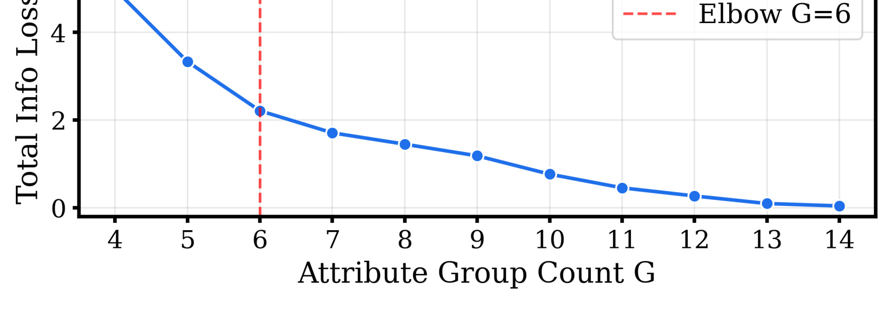
图 2 给出 target group count 和 cumulative information loss 的关系。横轴是合并后的属性组数 G，纵轴是总信息损失；曲线在 G=6 处出现 second-difference knee。论文据此选择六组，而不是四组、八组或十八组。这个选择很工程化：如果组数太少，每个位置要承载太多异质属性，slot 冲突和语义混淆会上升；如果组数太多，SID 序列变长，自回归延迟和训练成本都会上升。G=6 是信息损失曲线和部署成本之间的折中点。注意它不是证明“六组语义上最优”，而是证明在当前生产词典和日志分布下，六组是一个有数据支持的拐点。
把 entity 保留为单独锚点还有另一个效果：它给自回归序列提供了更稳定的起点。若第一位已经捕获“买的是什么”，后续位置承载品牌、人群、材质、场景、功能和风格等属性时，模型可以把它们理解为对主体的修饰。若 entity 被合并到其他组，第一位可能在“商品主体”和“修饰属性”之间摇摆，后续条件概率会更难学。论文没有把这个点写成单独公式，但它和后面反对 hierarchical encoding 的论证一致：自回归生成对前缀非常敏感，前缀越稳定，后续属性越容易发挥语言模型先验。
信息论合并也不是一次性离线统计后就永远固定。对一个真实平台，属性词分布会随着品类扩张、活动玩法和内容形态改变而漂移。若未来 Product Core 或某些风格属性增长过快，ECOM6 的密度结构可能改变，L6-D3 的容量分配也可能不再最优。因此，复现 OneRetrieval 时应把 IL 曲线、组内词密度、slot collision、reserved slot 使用率做成周期性监控，而不是只复制六组这个数字。论文给出的六组是 Kuaishou 当前数据下的拐点，真正可迁移的是用信息损失和密度来决定位置和容量。
合并过程还有一个重要细节：entity 被保留为 singleton anchor，不参与普通聚类。原因是 entity 通常是被购买对象的名词主干，例如鞋、裙子、玩具、手机壳；其他属性如品牌、材质、颜色、功能都附着在这个对象上。若 entity 被合并到其他组，第一位置的主语义锚点会变弱，后续属性的解释也会变乱。剩余 17 个类别用 agglomerative clustering 合并，距离是跨组平均 IL，同时加入组内熵、激活率同质性、语义一致性和组大小软约束，避免只按统计近邻合出不平衡或语义不连贯的组。
2.4 可扩展码本：非均匀容量、四块布局与保留槽
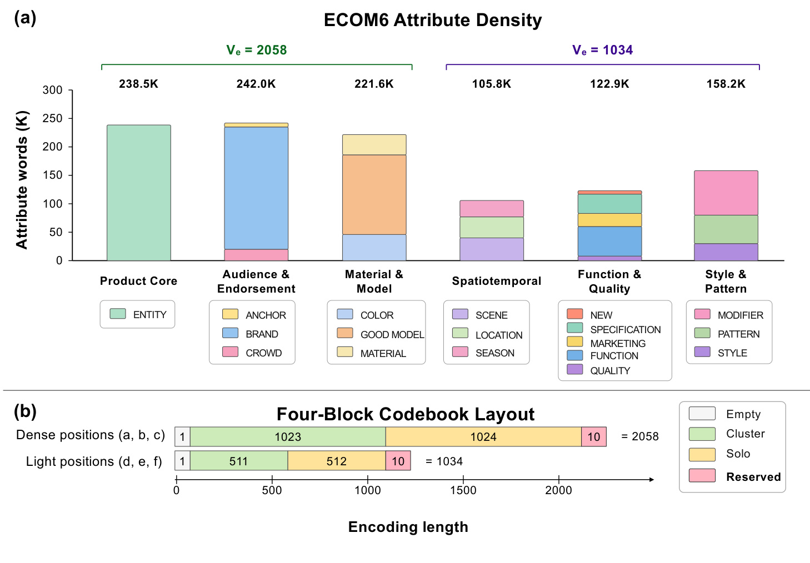
图 3 把 ECOM6 的两个关键设计放在一起。上半部分显示六组属性词数量差异很大：Product Core、Audience & Endorsement、Material & Model 分别约 238.5K、242.0K、221.6K，明显高于 Spatiotemporal 的 105.8K、Function & Quality 的 122.9K 和 Style & Pattern 的 158.2K。下半部分展示每个 codebook 的四块布局：empty、cluster、solo、reserved。密集位置使用更大容量，核心 slot 数为 2058；较轻位置容量为 1034。图中绿色/黄色/粉色块不是装饰，它们对应三种服务含义：empty 表示缺失或词不在词典中，cluster 覆盖长尾同义或近义属性词，solo 直接给高频头部词分配独立位置，reserved 则留给部署后才出现的新词。
非均匀容量的公式可以写成：
符号解释：V_\ell 是第 \ell 个位置的核心码本容量；L6-D3 表示总长度 L=6，其中三个最密集位置容量翻倍为 2048，剩余三个位置为 1024。论文还为每个位置追加 V^{rsv}_\ell=10 个 reserved slots，因此整体新增到 backbone vocabulary 的 SID token 数为 9276，其中 9216 是核心 token，60 是保留 token。这个容量设计的直觉很直接：slot 冲突主要发生在词密度最高的位置，如果六个位置都给 1024，Product Core 等高密位置会把数量级更多的词挤进相同容量；如果六个位置都给 2048，又会在轻位置浪费容量。L6-D3 用三个 dense positions 吸收主要冲突，用三个 light positions 控制成本。
四块布局进一步决定每个位置内部怎样分配。empty slot 固定为 index 0，表示该组没有匹配词或者词不在生产词典。cluster slots 覆盖长尾词：系统对组内尾部 attribute word 的 embedding 做 k-means，给每个 cluster 保留代表词，并在 Stage 0 监督中让模型学习这些代表词与 slot 的对应。solo slots 给高频头部词，原则上一词一槽，但非常接近的表面变体、双语 alias 或拼写变体可以共享。reserved slots 则训练期不绑定任何属性词，部署后才由运营绑定到新 trend word。这里的 reserved slot 不是传统意义上的 OOV token；它是提前加入模型词表、训练时被锻炼为“可发出”的位置，但语义绑定延迟到上线后。
item record 到 SID 的流程也值得注意。论文把标题、结构化属性、详情页文本、图片 OCR 拼起来，用 Aho-Corasick 自动机在生产 attribute vocabulary 中做确定性匹配。这个设计避免在线请求路径再跑神经抽取模型，保证编码延迟和可控性。若一个 merged group 内匹配到多个词，系统用预计算 importance table 选择代表词。第一类规则是 primary-subject precedence：例如记录里同时出现 ice cream 和 mold，LLM 离线判断真正商品主体是 mold；第二类规则是行为后验重要性，如 PV、CTR 等统计，用于在主体确定后排序剩余候选。最终，每个组选择一个代表词映射到 slot，六个 slot 拼成 SID。query 侧使用同样的词典匹配和选择规则，因此 query SID 与 item SID 位于同一属性空间。
实时干预成立依赖三个性质。第一是 syntactic reachability：reserved slots 从训练开始就是 codebook alphabet 的一部分，无约束 beam search 可以发出这些 token，激活新词不需要改 decoder 词表。第二是 word-agnostic identity routing：reserved slots 不在 Stage 0-2 绑定具体词，但 Stage 3 加入极小的 self-routing supervision，让模型学习 prefix(<\ell v>) 到 prefix(<\ell v>) 的路由行为。第三是 encoder-side determinism：新词 w_new 被加入字典后，Aho-Corasick 扫描会稳定把它映射到指定组 \ell 和指定 reserved slot <\ell v>。用公式概括第二点，就是：
符号解释：\langle \ell v\rangle 表示第 \ell 个位置的某个保留槽；prefix 表示 query SID 或 item SID 的前缀。这个监督不教模型 LABUBU 这个词本身，而是教模型看到某个保留槽前缀时，把它作为 identity router 保持下去。上线后，词典把 LABUBU 绑定到该槽，lookup index 把该槽绑定到目标 item set，模型只需要执行已经学过的“保留槽前缀保持”行为。闭码本量化方案做不到这一点，因为它没有从新词到指定量化 code 的确定路径，也没有让某个 code 位置承担可解释属性锚点。
2.5 四阶段监督微调：把语义、内容、共现和个性化分开训练
论文采用 BART-base 作为 encoder-decoder backbone，并把 9276 个 SID token 加入词表。四阶段 SFT 的顺序很有工程味道：不是让模型从第一步就做最终个性化召回，而是先让 SID alphabet 有含义，再让内容落到 SID，再让 query SID 和 item SID 有共现路由，最后接入用户上下文。
Stage 0 是 Attribute-SID alignment。训练模板包括“Attribute word is
Stage 1 是 Content alignment。它把 query、item title 或 item record 和 SID 做双向对齐，并加入 query 到 category、title 到 category 的预测任务。可以把它理解为生成式召回版的内容塔训练：模型学会从表面文本恢复对应 SID，也学会从 SID 或类别线索恢复内容。论文的消融显示，Stage 1 是检索质量的主要来源，因为去掉它会同时降低 order 和 click HR。它让模型知道“white running shoes”应该落到 running shoes、white、Nike、breathable 等属性组合上，而不是只背诵训练交互。
Stage 2 是 Collaborative co-occurrence。它从 click 和 order 日志中取 query-item 对，在 surface-level 做 query 与 item title 的互相预测，也在 SID-level 做 s_q 与 s_i 的互相预测。这个阶段的意义在于把“query SID 到 item SID”的路由学出来。对实时干预来说，Stage 2 尤其关键：如果一个 query 被新词词典编码为含 reserved slot 的 SID，模型最终要生成含同一 reserved slot 的 item SID，不能只停留在 query 文本理解。论文后面 Table 7 显示，去掉 Stage 2 后 total IHR@350 从 0.1340 掉到 0.0030，几乎回到随机碰撞水平。
Stage 3 是 Personalized retrieval。它使用当前 query、query SID、最近 search queries 和最近 interacted item SIDs 作为输入，生成真实交互 item 的 SID：
符号解释：s_q 是当前 query 经 KAE 得到的 SID；hist_q 是用户最近查询；hist_s 是近期交互商品 SID 序列；s_i 是目标点击或下单商品的 SID。这个任务把上下文个性化接入部署策略，并通过滑动窗口数据刷新让模型跟随最新流量分布。Stage 3 还加入非常小的 reserved-slot self-routing 辅助块，规模约为 Stage 3 数据的 10^{-5}，用于保持 reserved token 可发出并学习 word-agnostic identity routing。这个辅助块小到不应显著改变主检索目标，但足以防止 reserved token 从来不作为 target 出现而被 decoder 忽略。
在服务实现上，reserved slot 还需要配合严格的资源治理。每个位置只预留 10 个槽，论文说 60 个 reserved tokens 可以覆盖平台一周趋势周期，但这隐含了 slot 能被回收、过期和重新绑定的运营流程。一个新词绑定到商品集合后，系统需要记录绑定时间、触发人、目标 item set、预期生效范围、回滚策略和效果监控；当热点结束或商品下架时，slot 应释放或降权。否则 reserved block 会被历史活动词占满，后续新词只能等待模型版本或人工清理。论文主要证明机制可行，没有展开 slot lifecycle，这部分在工程落地时不能省略。
另一个实现细节是 query 与 item 的词典匹配必须共享标准化规则。若 query 侧把一个新词归为 brand，而 item 侧把同一字符串归为 marketing 或 entity，reserved slot 的 group 就会错位，Stage 3 的 prefix self-routing 也无法工作。Aho-Corasick 自动机只保证快速匹配，不保证类型正确；类型一致性来自离线属性抽取模型、词典审核和同义归并。KAE 的可编辑性越依赖确定性资源，资源质量就越成为模型质量的一部分。对外部团队而言，复现难点可能不在 BART-base，而在如何把商品文本、OCR、结构化属性和运营词表统一成可维护的 typed attribute dictionary。
最后，论文还专门讨论为何不使用 hierarchical encoding。直觉上，非 entity 属性如果条件化在 entity 下，brand “ZARA” 在 dress 和 lipstick 下可以使用不同 slot，似乎能降低密度。但实验相反：无论把五个非 entity 位置都条件化，还是只把 brand 条件化，效果都比非层次共享码本差。作者给出三点原因。第一，slot-to-meaning 从函数变成一对多，Stage 0 利用语言模型先验的能力被稀释。第二，同一个属性词在许多 entity 下重复出现，条件化会切碎训练信号，长尾属性泛化变差。第三，自回归生成一旦第一位 entity 错误，后续条件化位置都会被错误前缀拖累，在无约束 decoding 下没有 prefix-tree 纠正。这个负结果很重要，因为它说明“更细粒度、更条件化”并不自动适合生成式召回；在工业场景里，稳定共享的全局 codebook 可能比看似更精细的层次 codebook 更可靠。
还需要强调 beam search 的无约束性。很多生成式检索会用 prefix tree 或 constrained decoding 保证输出一定是已知 item identifier；OneRetrieval 这里选择 unconstrained beam search，是为了让 reserved slot 在上线后仍有机会被发出。若使用严格前缀树，而树里只有训练期已绑定的 item SID，新 reserved slot 即使在词表中存在，也可能被 decoding 约束挡掉。无约束解码带来的风险是模型可能生成查找索引中没有足够 item 的 SID，或者组合出低质量属性序列，因此 T 和候选过滤要承担兜底职责。论文的路线是在解码自由度和索引可控性之间取平衡：decoder 不被训练期 catalog 锁死，lookup index 再把可服务的 SID 解析成商品。
SID 共享也是这个框架的一个实际设计点。T 是一对多映射，说明多个 item 可以共享同一个六位 SID。这会带来召回阶段常见的粒度问题：共享太粗，候选集合里会混入大量近似但不合适的商品；共享太细，SID 空间稀疏，模型要记住更多组合，reserved slot 干预也更难覆盖商品集合。KAE 的六组属性实际上是在定义共享粒度：只保留最能解释购买意图的属性，放弃一些过细的 SKU 差异，让召回先覆盖合理候选，再由预排和排序处理价格、库存、店铺、图片质量、具体尺码等细节。这个分工符合工业 cascade：召回层不负责最终排序精度，但必须给后续阶段足够干净、足够广的候选池。
对于保留槽的训练，论文的自路由监督看似很小，却解决了一个 decoder 训练中常见问题：从未作为目标出现的 token 会被模型自然压低概率。仅把 reserved token 加入词表并不能保证它可发出，因为最大似然训练会持续强化已出现 token，而未出现 token 的 logits 缺少正样本。Stage 3 的 tiny auxiliary block 给每个 reserved slot 提供最少量 target exposure，让模型知道这些 token 是合法输出；同时它不绑定具体词，避免训练期把某个保留槽语义固定死。这个设计比“上线后临时扩词表”稳，因为扩词表会破坏模型输出层和优化状态；也比“把所有潜在新词提前塞进词表”省，因为热点词不可穷举。
KAE 的 item 侧和 query 侧对称编码，并不意味着二者完全一样。item record 通常有标题、结构化属性、详情页长文本和 OCR，词典匹配的证据更充分；query 通常很短，可能只有一两个词，还会含省略、口语、错别字和活动词。因此，query SID 更容易稀疏或错位。Stage 1 用 query 与 SID 的内容对齐处理短文本理解，Stage 2 用真实点击/下单共现处理短 query 到商品属性组合的偏移，Stage 3 再用用户历史补全个性化上下文。若只用 item 文本构建 SID，而不训练 query 侧对齐，模型会知道商品怎么编码，却不知道用户请求应该路由到哪些位置。
Stage 2 的价值还可以从 reserved slot 的未来绑定来理解。一个新词上线时，模型不认识它的语义，但 query encoder 会把它放进某个 reserved slot。此时模型不能依赖词义，只能依赖结构性训练：看到 query SID 的某个位置出现特殊 token，就倾向于生成 item SID 中相同位置也含该 token 的候选。Stage 2 在已绑定普通属性上学习 query-SID 与 item-SID 的共现，Stage 3 的自路由块把这种行为扩展到 reserved slot。换言之，保留槽干预不是语义泛化，而是位置化路由泛化。这个区别很关键，因为它解释了为什么 OneRetrieval 可以在“不更新模型、不知道新词含义”的情况下仍然有干预能力。
非层次编码的取舍也可以进一步拆开。实体条件化会降低每个实体下的属性密度，但它把同一个 brand、style 或 material 分裂成多个 entity-specific code。对语言模型来说，原本一个词对应一个位置化 slot，现在同一个词在不同 entity 下对应不同 slot，Stage 0 的双向映射会更难记；对线上新词来说，运营还必须决定它绑定在哪个 entity 条件空间里，若一个 trend word 跨多个品类，就会出现多处绑定和多处回滚。全局非层次码本牺牲了一些局部压缩，却换来词到 slot 的唯一性、运营编辑的简单性和跨品类泛化的训练样本共享。
从模型容量看，OneRetrieval 没有引入新的大型 backbone，而是用 BART-base 加 9276 个 SID token。新增 token 主要改变输出空间和词表，而不是把复杂度放到更深的网络中。这使得论文的方法重点落在数据组织和 identifier 设计上：属性抽取、聚类、slot 分配、SFT 模板、lookup index 才是核心资产。若换成更大的 encoder-decoder，HR 可能继续提升，但不能自动产生可编辑性；若没有 KAE 和 reserved block，再大的模型也只能在旧词和旧 item 分布上泛化。这个判断对工程实践很重要，因为它提示团队应先把可控 identifier 做对，再讨论 backbone 尺寸。
最后，方法里的失败模式也应提前标出。第一，属性词典漏召会让 query 或 item 的关键购买意图进入 empty slot，模型只能依赖剩余上下文，reserved slot 也无法触发。第二，多词选择规则若选错主体，会把商品挂到错误 SID，召回时即便模型生成了合理意图，也可能解析不到正确商品。第三，reserved slot 绑定的 item set 若质量差，会把生成模型的候选污染到下游排序，甚至让运营干预变成噪声来源。第四，无约束 decoding 若生成低频或未充分物化的 SID，T 解析可能过少，需要 fallback 或补充候选策略。论文主要展示正向链路，但这些失败模式决定它能否从单场景扩展到更复杂电商域。
因此，OneRetrieval 的部署诊断应至少分四层看：query 词典命中率、query SID 与 item SID 的位置级一致性、SID-to-item 解析后的候选规模，以及下游排序前后的转化变化。只有这四层同时记录，才能区分是模型路由问题、词典问题、索引绑定问题，还是排序阶段重新筛掉了生成式召回候选。
3. 实验结果
3.1 离线基准与主结果：OneRetrieval 更像深召回替代，而不是顶位排序器
实验基准来自工业电商平台连续 31 天搜索日志。前 30 天随机采样 5×10^6 个有交互的 user request logs 做训练，第 31 天抽取 29,964 个 click 样本和 29,953 个 order 样本做测试。去重后 query 侧有 7,629,195 个 query，item 侧包含目标 item 和用户历史交互 item，共 20,165,617 个 item。属性词典约 1.08×10^6 typed key attribute words。指标包括 click/order 两类目标上的 HR@K 与 MRR@K，K 取 10、100、350；干预能力用 IHR@K 和 IAR@K；线上用 Item CTR、Buyer、Order。
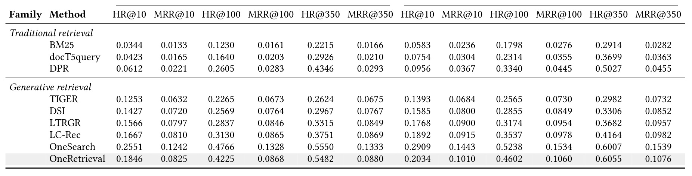
表 2 的结果需要分层读。和传统方法相比，OneRetrieval 在深召回上优势明显：order HR@350 为 0.5482，click HR@350 为 0.6055，显著高于 BM25、docT5query 和 DPR。和生成式方法相比，它在浅层指标上不如 OneSearch：order HR@10 是 0.1846，对 OneSearch 的 0.2551；order MRR@350 是 0.0880，对 OneSearch 的 0.1333。这说明 OneRetrieval 不是为了把最相关 item 放到第一位而优化的 rerank-like 生成器。随着 K 增大，它和 OneSearch 的差距缩小，order HR@350 只有 0.0068 的绝对差距，click HR@350 还略高于 OneSearch。对召回分支来说，深列表覆盖比前十精排更关键，因为后续还有预排和排序。因此，表 2 支撑的结论不是“OneRetrieval 全面超过 OneSearch”，而是它在 recall depth 上达到强生成式基线水平，并用可编辑性换取了浅层排序精度的一部分损失。
这也是论文把 OneRetrieval 定位为 retrieval stage substitute 的原因。OneSearch 的目标更接近统一 recall、pre-ranking 和 ranking 的级联，闭码本层次量化自然会优化 top placement；OneRetrieval 则希望替代倒排和 dense 等召回分支，重点是 HR@350 这样的候选覆盖，以及能否让运营干预仍然可用。若把它当成排序器看，MRR gap 是明显短板；若把它当成召回层看，深召回持平、可编辑性增强才是核心收益。
3.2 码本设计消融：长度、容量和非层次共享的三重取舍
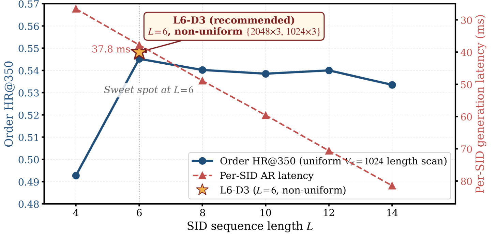
图 4 回答为什么 SID 长度选 L=6。蓝线是 uniform V_l=1024 时不同 SID 长度下的 order HR@350，红色虚线是每个 SID 的生成延迟。L 从 4 到 6 时，HR 明显上升；超过 6 后，HR 没有持续提升，甚至在 L=14 时下降，而延迟继续线性增加。金色星标表示部署配置 L6-D3，它在 L=6 的基础上通过非均匀容量把 HR 再抬高。这个图说明长度不是越长越好：长 SID 理论上能携带更多属性，但每多一个自回归位置都会拖慢推理，还可能让训练数据在更多组合上变稀。L=6 是质量和延迟的交点，也是前面信息损失曲线选择 ECOM6 的实验呼应。
这段长度实验还说明 L6-D3 的“更好”不是单纯由更多 token 数带来的。若只追求 HR，L6-D6 的容量更大，order HR@350 也更高；但 L6-D3 把容量花在最拥挤的三组上，在 latency 不因长度增加而恶化的条件下取得接近收益。对线上召回来说，per-SID generation latency 与 beam size、候选扩展和下游预排 SLA 直接相关，增加长度会成倍影响并发成本。图 4 因此应和表 3 一起读：先用 L=6 固定自回归步数，再用非均匀容量处理高密位置冲突，这是成本约束下的两步优化。
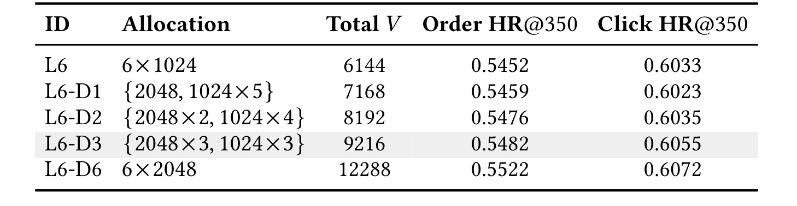
表 3 固定 L=6，比较不同容量分配。统一 6×1024 的 L6 已经达到 order HR@350 0.5452、click HR@350 0.6033。逐步给 dense positions 翻倍容量后，L6-D1、L6-D2、L6-D3 的 order HR@350 从 0.5459、0.5476 到 0.5482，click HR@350 到 0.6055。L6-D6 全部翻倍到 12288 总容量，order HR@350 提到 0.5522，但成本多出约 33%。论文选择 L6-D3，是因为它把翻倍容量用在三组最密集属性上，已经接近收益拐点。这个结果也提醒部署时不能只看总 V：同样增加 slot，把容量放在高密 Product Core、Audience & Endorsement、Material & Model 位置，比平均扩容更符合冲突来源。
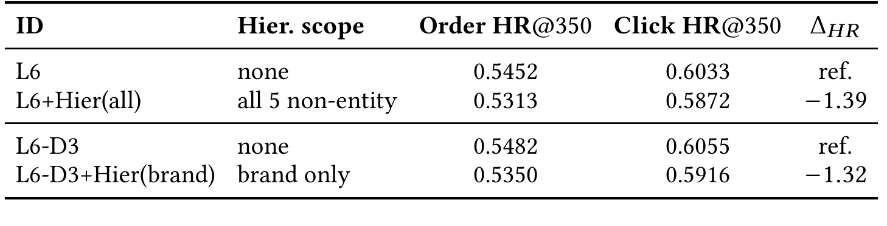
表 4 验证非层次共享码本的选择。L6+Hier(all) 相比 L6，order HR@350 从 0.5452 降到 0.5313，click HR@350 从 0.6033 降到 0.5872，order HR 下降 1.39 点。L6-D3+Hier(brand) 只对 brand 条件化，也从 0.5482 降到 0.5350，下降 1.32 点。这个负结果对推荐工程很有参考价值：在 item taxonomy 很复杂的场景里，大家常会想把属性挂在 entity 下面做层次化，减少同名词冲突；但生成式解码对前缀错误很敏感，层次化还会把高频属性词切成多个条件版本，削弱语言模型先验和训练样本共享。OneRetrieval 选择全局共享非层次码本，不是因为层次方案没想到，而是因为它在相同容量下被实验否定。
3.3 KAE 与量化编码：真正拉开差距的是干预能力
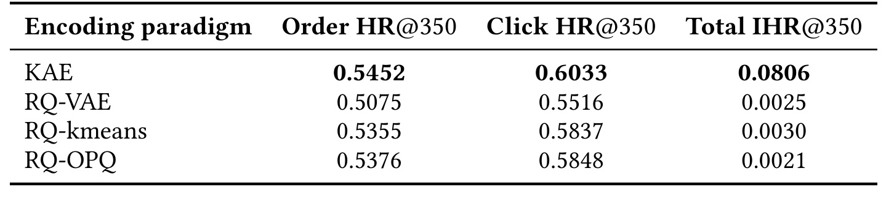
表 5 把码本结构控制在共享 L6 layout 下，只替换编码范式。KAE 的 order HR@350 为 0.5452，click HR@350 为 0.6033，略高于 RQ-VAE、RQ-kmeans 和 RQ-OPQ；但真正巨大的差距在 total IHR@350：KAE 为 0.0806，三个量化方案分别只有 0.0025、0.0030、0.0021。由于这些方法共享训练预算和评估协议，这个结果说明可编辑性不是微调技巧补出来的，而是 identifier 结构决定的。量化码本把 item embedding 映射到 centroid，训练期 centroid 就固定了；即使后面追加 reserved integer code，也没有确定性路径把某个新词映射到该 code，也没有 Stage 0 的属性词锚点可用。KAE 的优势不是检索质量多高几个点，而是它在保持相近检索质量的同时，把干预从偶然 code collision 变成可训练、可路由的机制。
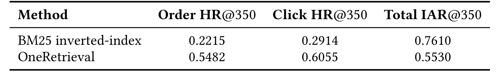
表 6 更严格，因为它不再只和不可编辑的生成式量化方法比，而是和真正可编辑的 BM25 inverted-index 比。BM25 的 total IAR@350 是 0.7610，OneRetrieval 是 0.5530；倒排索引在“新词激活率”上仍然更强，这是符合预期的，因为词项匹配就是它的原生操作。但 OneRetrieval 的 order HR@350 是 0.5482，对 BM25 的 0.2215；click HR@350 是 0.6055，对 BM25 的 0.2914。也就是说，它恢复了约四分之三的词级激活能力，同时把检索质量提高到两倍以上。这个 trade-off 是论文最实际的地方：OneRetrieval 没有宣称完全复制倒排索引的控制强度，而是证明“在一个生成式模型中恢复大部分可编辑性，同时显著提升召回质量”已经足以支撑替换低转化 lexical branch。
IHR 和 IAR 的差异也要分清。IHR@K 是 item-level，要求 fabricated target item 出现在 top-K；IAR@K 是 word-level，关注注入词是否在召回结果中被激活。生产运营通常绑定的是一个新词到一组商品，不是单个商品，所以 IAR 更接近倒排索引干预。表 5 的 IHR 用来比较生成式编码范式是否具备 item 级可控路由，表 6 的 IAR 用来回答和 BM25 相比是否仍有运营可用性。两个指标一起看，OneRetrieval 的可编辑性不是完美替代，但已经超出闭码本 GR 一个数量级。
3.4 四阶段训练消融：检索质量和可编辑性由不同阶段支撑
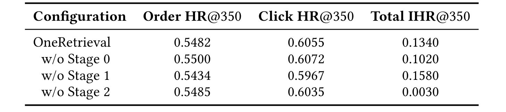
表 7 解释为什么四阶段都要保留。去掉 Stage 0，order HR@350 反而从 0.5482 到 0.5500，click HR@350 到 0.6072，属于噪声范围内不降；但 total IHR@350 从 0.1340 降到 0.1020，说明 Stage 0 对检索质量不是主力，却对 SID alphabet 的语义锚定和可编辑性有帮助。去掉 Stage 1，HR 小幅下降到 order 0.5434、click 0.5967，但 IHR 反而到 0.1580；这说明 Stage 1 主要提供内容检索能力，不是保留槽路由能力。去掉 Stage 2，HR 基本不变，但 IHR 从 0.1340 崩到 0.0030，几乎等同于失去干预能力。这正好对应方法章的分析：Stage 2 是唯一显式暴露 query-side SID 与 item-side SID 共现关系的阶段，因此它让 reserved slot prefix 在 query 侧出现后，能被生成策略路由到 item SID。
这个消融的启发是，线上可编辑性不是简单加一个 reserved token 就能得到。若没有 Stage 0，模型对 slot 语义和位置偏置不稳；若没有 Stage 2，query SID 与 item SID 的路由没有被训练；若没有 Stage 3，个性化部署目标和 reserved slot self-routing 都不存在。可编辑性是多个训练阶段的组合性质，但它和普通 retrieval HR 的贡献来源并不完全重合。这也解释了为什么一些闭码本 GR 即便离线 HR 高，仍然很难接运营词典：它们缺少 query-side deterministic encoding、attribute-anchored alphabet 和 self-routing supervision 的组合。
3.5 在线 A/B：替换倒排索引和近乎全量召回的边界
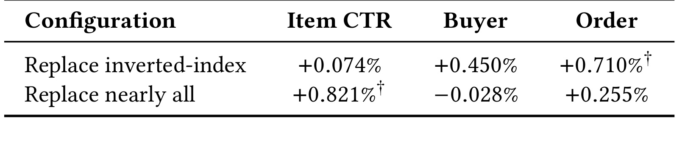
表 8 给出两个线上实验。第一行只替换 inverted-index branch，Item CTR +0.074%，Buyer +0.450%，Order +0.710%，其中 Order 带显著性标记。这说明 OneRetrieval 不是靠制造低质点击提升 CTR，而是在替换低转化 lexical branch 后带来订单增益。论文还提到一个独立 7 天实验：单独移除倒排索引但不上 OneRetrieval，没有显著业务变化，因此增益不能简单归因于“删掉一个差分支”，而是来自 OneRetrieval 召回了更有转化倾向的商品。
第二行更激进，替换 inverted-index 和 dense vector branch，接近让一个生成模型承担大部分召回。结果是 Item CTR +0.821% 且显著，Buyer -0.028%，Order +0.255%，后两个没有显著变化。这个结果的含义要谨慎：它不是证明 OneRetrieval 已经可以无风险替换所有召回分支，而是在 20% relative traffic、约 8.2% absolute traffic、7 天 AA 和 11 天 AB 的协议下，替换近乎全量召回没有造成显著转化损失，并显著提升点击质量。对工业系统来说，这已经是很强的部署信号，但仍需要更长周期、更多场景和更细粒度 guardrail 才能证明全面替代。
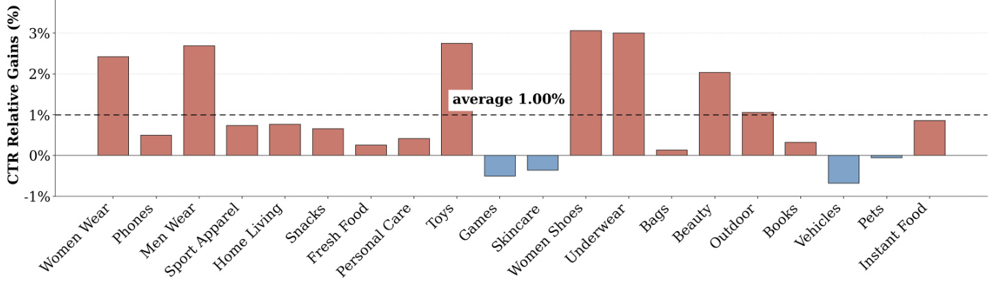
图 5 展示第二个线上实验在 top 20 行业中的 CTR relative gains，虚线平均值为 1.00%。二十个行业里有十六个为正，说明收益不是由单一垂类拉动；增益最高集中在 Women Shoes、Underwear、Toys、Men Wear、Women Wear、Beauty 等属性结构丰富的垂类。这和 KAE 的机制一致：鞋服、美妆、玩具类 query 往往携带品牌、风格、人群、颜色、材质、功能等细粒度属性，字面词匹配容易漏掉同义或组合意图，而属性对齐的 SID 能把这些 intent 拆到不同位置再组合生成。少数负向行业如 Games、Skincare、Vehicles、Pets 幅度在 -0.7% 内且论文称不显著，提示 OneRetrieval 的效果和行业属性密度、词典覆盖、商品文本质量有关。它不是对所有类目一刀切的改进，而是在“属性词能稳定解释购买意图”的类目最有优势。
整体实验链条比较完整：表 2 证明深召回质量够接近最强生成式 baseline；图 4、表 3、表 4 说明部署配置不是任意选择；表 5、表 6 专门证明可编辑性；表 7 把可编辑性归因到训练阶段；表 8 和图 5 给线上业务证据。弱点是论文没有公开更多延迟、资源、线上失败案例、词典维护成本和长期 drift 细节。尤其是 reserved slot 总量只有 60，论文称能覆盖平台 weekly trend cycle，但不同业务的热点词密度和运营频率可能差异很大。另一个未充分展开的问题是 lookup index 的 item set 绑定质量：如果运营把新词绑定到过宽或过窄的商品集合，模型可发出 reserved slot 并不能自动保证结果质量。
4. 总结
4.1 我的判断
OneRetrieval 的主要贡献不是“提出一种新的 SID 命名方式”这么简单，而是把生成式召回的 identifier 设计、训练阶段和线上编辑接口合在一起。KAE 用属性词做语义锚点，解决闭码本不可解释的问题；四块码本和 reserved slot 让新词绑定有落点；四阶段 SFT 又让模型既能理解内容，又能在 SID 空间中执行 query 到 item 的路由。它把倒排索引的运营编辑能力迁移到 attribute dictionary + lookup index，把召回质量交给一个 encoder-decoder policy，从而给多分支召回统一提供了一条现实路径。
我认为这篇论文最值得关注的地方，是它承认可编辑性和检索质量之间存在 trade-off，而不是把生成式模型包装成所有维度都更好。OneRetrieval 的 shallow HR 和 MRR 不如 OneSearch，IAR 也不如 BM25；但它在两个方向上都足够接近生产可用区间：深召回接近最强生成式 baseline，可编辑性恢复到 BM25 的大约四分之三。工业召回层往往需要的是这样的 Pareto 改进，而不是单指标最优。
4.2 工程启发与复现建议
第一，若要在自己的推荐或搜索系统中复现类似思路，最先要盘点的不是模型，而是属性词典。KAE 的前提是有覆盖 query 和 item 的 typed attribute vocabulary，并能把属性词稳定归到少数 merged groups。没有高质量词典，reserved slot 的确定性绑定就不存在，模型会退化为普通生成式检索。
第二，训练阶段应分离语义锚定、内容对齐、共现路由和个性化检索。直接用 query 到 item SID 的交互日志训练，可能能拿到 HR，但不一定能得到 reserved slot 的 identity routing。表 7 已经说明，Stage 2 对 IHR 是决定性的。复现时至少要单独构造 query-SID 与 item-SID 的 SID-level co-occurrence 任务，并验证去掉它后干预能力是否崩塌。
第三，线上接入要把字典更新、SID-to-item index 更新和模型发布周期解耦。OneRetrieval 的 editability 来自“不改模型”的资源更新链路，因此需要运营后台、词典版本、reserved slot 分配、item set 绑定和索引刷新都有审计机制。否则，模型具备可编辑性，但平台无法安全使用。
4.3 局限与后续跟进
局限至少有四点。第一，论文公开的是 Kuaishou out-of-mall search 场景，属性词典、商品文本质量、运营流程和流量结构都很强，外部平台未必有同等条件。第二，reserved slot 总量、分配策略和回收机制披露有限；如果热点词长期积累或多团队同时干预，slot 生命周期会变成系统治理问题。第三，离线 intervention probe 使用 Qwen3-7B 生成 OOV words，虽然作者说明经过验证，但它仍然是构造型测试，和真实运营新词分布可能有差异。第四，线上实验周期和流量比例有限，论文没有展示长周期转化、投诉、低质商品曝光、冷启动商品公平性和延迟成本的完整曲线。
后续我会优先跟进三件事。第一，等待代码仓库内容是否包含 KAE 词典构建、Stage 2 SID-level task 和 reserved slot probe 的可复现实验，因为这些模块决定方法是否能被外部验证。第二，关注 OneRetrieval 是否会扩展到多模态属性，论文结论中提到未来会把 SID alphabet 扩展到视觉信号，这对服饰、美妆和长尾商品很关键。第三，关注它和排序/预排的关系：如果一个生成模型替代了大部分召回分支，下游 ranker 的训练分布、负样本构成和多样性约束都会变化，真正的系统收益可能需要跨召回和排序联合评估。第四，可以比较 OneRetrieval 与 RAG/Agent 里的可编辑 memory routing：二者都在处理“模型参数不更新，但外部资源可编辑”的问题，KAE 的 reserved slot 思路可能迁移到个性化记忆或工具路由里。第五，建议复现时不要只看 HR@K，还要设计 IHR/IAR 类指标，否则会遗漏论文真正关心的运营可控性。